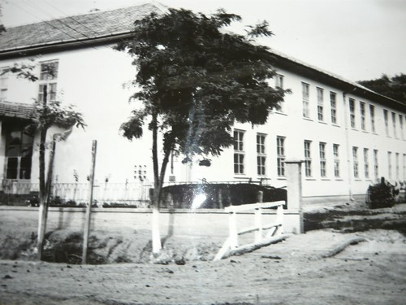

|
În secolele XVII-XIX învãţãmântul din Camãr a fost un învãţãmânt confesional-reformat. Clãdirea şcolii era aşezatã lângã biserica reformatã.
Prima şcoalã elementarã în sat a funcţionat cu un învãţãtor (rector) şi un ajutor (perceptor), numit de colegiul din Debreţin.
În timpul recensãmântului populaţiei de pe vremea lui Iosif al II-lea se înregistreazã o creştere semnificativã a populaţiei.
În evoluţia satului se observã o îmbunãtãţire în secolul al XIX-lea , când au fost construite şcoala şi biserica. Plasa Camãr aparţinea Comitetului Crasna şi era compusã din 16 sate pânã la împãrţirea administrativ- teritorialã din anul 1848-1849.
La început funcţionau clase de fete şi clase de bãieţi, subordonate bisericii reformate.
Din anul 1876 comuna Camãr aparţine judeţului Sãlaj.
În anul 1897 s-a înfiinţat învãţãmântul popular de stat.
Anii 1948-1989- au reprezentat anii în care învãţãmântul obligatoriu şi gratuit devine de 7 clase, mai târziu de 8 clase.
Dupã Reforma Învãţãmântului din 1948, a luat fiinţã Şcoala Generalã de 7 clase.
Începând cu anul şcolar 1964/1965 în Camãr i-a fiinţa Şcoala Generalã de 8 ani, care va deveni din anul şcolar 1969/1970 Şcoala cu clasele I-X. |
|
 |
Şcoala Camãr funcţioneazã cu 10 clase , asigurând elevilor din clasele a IX-a şi a X –a pregãtirea profesionalã corespunzãtoare.
Între anii 1962-1964 se construieşte actuala clãdire principalã a şcolii cu 9 sãli de clase organizate ulterior pe laboratoar şi cabinete. Dupã 1989 Şcoala Camãr urmeazã cursul firesc al reformelor şi înnoirilor din întregul învãţãmânt romãnesc.
De-a lungul istoriei sale, Şcoala din Camãr şi-a câştigat un prestigiu binemeritat reflectat în rezultatele obţinute în pregãtirea elevilor.
În prezent unitatea poartã numele Şcoala Gimnazialã Camãr, având în subordine grãdiniţa cu program normal.
Forma de învaţamânt este zi.
Unitatea noastrã este unitate cu personalitate juridicã si are contabilitate proprie. ŞCOALA GIMNAZIALÃ CAMÃR este o unitate cu prestigiu dobândit prin rezultatele deosebite obţinute în pregãtirea elevilor, printr-o permanentã deschidere la nou. Oferta educaţionalã a şcolii rãspunde nevoilor educaţionale ale comunitãţii, prezintã un grad ridicat de flexibilitate, de adaptare la programul de reformã a învãţãmântului românesc.
|